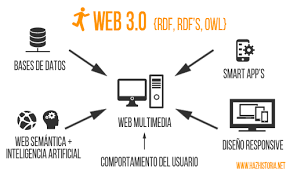

Linea Del Tiempo De La Evolucion Web
Web 1.0
Web 1.0 se refiere a un estado de la World Wide Web. Es en general un término usado para describir la Web antes del impacto de la «fiebre punto com» (1997-2001), que es vista por muchos como el momento en que el internet dio un giro.

Web 2.0
Cuando hablamos de la Web 2.0 o la Web Social, nos referimos a un modelo de páginas Web que facilitan la transmisión de información, la interoperatividad y la colaboración entre sus usuarios, mediante un diseño centrado en sus necesidades, más que en las de la empresa.

Web 3.0
La web 3.0 es el tipo de internet más actual, cuyas características principales son la democratización y que basado en la tecnología de la web semántica.

Web 4.0
Web 4.0 es una capa de integración necesaria para la explotación de la Web semántica y sus enormes posibilidades.

Regresar al inicio